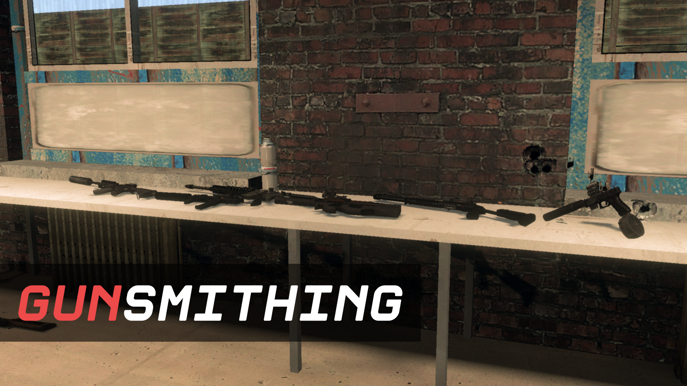

О сайте.
Данный сайт является википедией по серверу ZCity. Здесь вы сможете
найти информацию по механикам, режимам, биндам и полезным фишкам,
которые помогут вам в игре.
Википедия не завершена на 100% и будет дополняться.
|  |
Z-City - сервер в игре Garry's mod, с такими режимами, как:
Homicide; TDM и (ссылка на страницу режимов) так далее. |
В сравнении с прошлым проектом Хомиград, ZCity отличается как визуально, так и механиками. Геймплей на сервере также значительно медленнее по сравнению с Хомиградом.